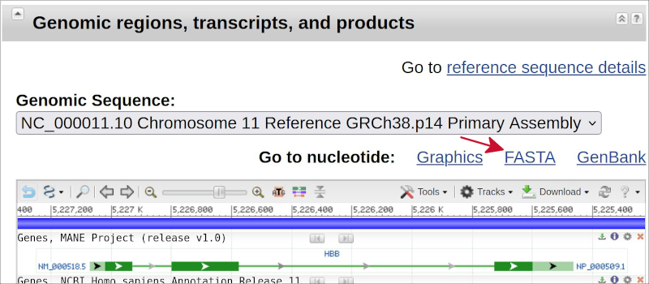

The learning objectives for this practical are:
CAG tri-nucleotides, and the position of the first CAG tri-nucleotide found, in a DNA sequence stored in a FASTA file.Whenever you are stuck with an error, please consult the section entitled “Debugging” from practical 4.
To do this practical you need an installation of Python version 3. You can find the instructions in the setup link on how to install Python version 3 in your system. Once Python is installed, you should be able to call it from the shell in the terminal window. You can check whether that is possible by typing:
$ which python
$ python --versionIt may happen that you have two Python installations, one corresponding to version 2.x and another to version 3.x. In that situation the previous command may say that your Python version is 2.x and to access the version 3 you need to call the executable python3. Try then for instance:
$ python3 --versionIf this is your case, then whenever the executable python is invoked in the rest of this practical, please use python3 instead.
Following the explanation from Wikipedia, in bioinformatics the FASTA format is a text-based file format for representing sequences of either nucleic acids or amino acids. Here, we want to learn how can we read from a Python program the DNA sequence of a gene stored in FASTA format within a text file and make some simple summaries of the DNA content from that gene. We are going to illustrate that task with the hemoglobin subunit beta (HBB) gene, which is a gene coding for a protein that forms part of haemoglobin, the molecule responsible for transporting oxygen in red blood cells of almost all vertebrates.
First, let’s download the FASTA file of the DNA of the human HBB gene following these steps:
Scroll down to the section entitled “Genomic regions, transcripts and products” and click on the link called FASTA, as indicated by the red arrow in the following image.

In the next page, click on the link called Send to:, from the pull-down menu click on File and finally on the button Create File, as indicated by the red arrows in the following image.
sequence.fasta will be downloaded from your browser, probably into your downloads directory. Move it into the folder that you are using for this practical under the name HBB.fa. This is the FASTA file containing the DNA of the human HBB gene.Examine the first lines of this FASTA file with the Unix head command. The result should be as follows:
$ head HBB.fa
>NC_000011.10:c5227071-5225464 Homo sapiens chromosome 11, GRCh38.p14 Primary Assembly
ACATTTGCTTCTGACACAACTGTGTTCACTAGCAACCTCAAACAGACACCATGGTGCATCTGACTCCTGA
GGAGAAGTCTGCCGTTACTGCCCTGTGGGGCAAGGTGAACGTGGATGAAGTTGGTGGTGAGGCCCTGGGC
AGGTTGGTATCAAGGTTACAAGACAGGTTTAAGGAGACCAATAGAAACTGGGCATGTGGAGACAGAGAAG
ACTCTTGGGTTTCTGATAGGCACTGACTCTCTCTGCCTATTGGTCTATTTTCCCACCCTTAGGCTGCTGG
TGGTCTACCCTTGGACCCAGAGGTTCTTTGAGTCCTTTGGGGATCTGTCCACTCCTGATGCTGTTATGGG
CAACCCTAAGGTGAAGGCTCATGGCAAGAAAGTGCTCGGTGCCTTTAGTGATGGCCTGGCTCACCTGGAC
AACCTCAAGGGCACCTTTGCCACACTGAGTGAGCTGCACTGTGACAAGCTGCACGTGGATCCTGAGAACT
TCAGGGTGAGTCTATGGGACGCTTGATGTTTTCTTTCCCCTTCTTTTCTATGGTTAAGTTCATGTCATAG
GAAGGGGATAAGTAACAGGGTACAGTTTAGAATGGGAAACAGACGAATGATTGCATCAGTGTGGAAGTCTNext, create a new text file called tallynt.py with the following Python program:
f = open("HBB.fa")
line = f.readline() ## read the first line from HBB.fa
print("The DNA sequence from gene:")
print(line.strip()) ## print the first line from HBB.fa
seq = "" ## seq will store the whole gene DNA
while (line) : ## while 'line' is not empty
line = f.readline() ## read the next line from HBB.fa
seq = seq + line.strip() ## concatenate that line to 'seq'
v = list(seq) ## convert 'seq' into a vector 'v'
n = len(v) ## calculate the length of vector 'v'
print(f"has a total of {n} nucleotides")This Python program reads the lines from HBB.fa and concanates them into a single character string called seq, which afterwards is converted into a vector v, from which we calculate its length, corresponding to the total number of nucleotides in the DNA encoding the gene HBB. It includes a call to the following functions:
open(), which opens a text file and returns an object that allows one to read lines from that file using the method f.readline(), for some file object f.str.strip(), where str is some character string object and it removes any leading and trailing spaces and newlines from that string.When you run this program, the output must be as follows:
$ python tallynt.py
The DNA sequence from gene:
>NC_000011.10:c5227071-5225464 Homo sapiens chromosome 11, GRCh38.p14 Primary Assembly
has a total of 1608 nucleotidesNotice that you could also count the nucleotides using a Unix shell command line as follows:
$ grep -v '>' HBB.fa | fold -1 | wc -l
1609Try to understand what is doing each bit of the previous Unix command-line. Could you figure out why this command line is giving a number that is one unit larger than what our Python programe gives?
Enable the program to take the name of the FASTA file as a first argument in the command line, so that it can work with any FASTA file containing DNA from any gene. Run it, for instance, with the DNA from the the angiotensin converting enzyme 2 (ACE2) gene, which encodes a protein that acts as a receptor for the spike glycoprotein of the human coronavirus SARS-CoV-2, the causative agent of coronavirus disease-2019 (COVID-19), e.g.:
$ python tallynt.py ACE2.faEnable the program to take a second argument where we specify one of the four possible nucleotides (A, C, G or T) and it calculates the number of occurrences of that nucleotide in the DNA sequence of the gene, e.g.:
$ python tallynt.py HBB.fa AYou can verify whether the calculation is correct by doing it also in Unix with the following command line:
$ grep -v '>' HBB.fa | fold -1 | grep A | wc -l
411Try to understand what is doing each bit of the previous Unix shell command line. Could you think of a way to tally all four nucleotides in the same command line?
The Wikipedia page for DNA says:
Deoxyribonucleic acid (DNA) is a polymer composed of two polynucleotide chains that coil around each other to form a double helix.
The nucleotides forming DNA are adenine (denoted by A), cytosine (C), guanine (G) and thymine (T). The Wikipedia page for a CpG site says:
CpG is shorthand for 5’—C—phosphate—G—3’ , that is, cytosine and guanine separated by only one phosphate group; phosphate links any two nucleosides together in DNA. The CpG notation is used to distinguish this single-stranded linear sequence from the CG base-pairing of cytosine and guanine for double-stranded sequences. […] CpG dinucleotides have long been observed to occur with a much lower frequency in the sequence of vertebrate genomes than would be expected due to random chance. […] This underrepresentation is a consequence of the high mutation rate of methylated CpG sites. […] CpG islands (or CG islands) are regions with a high frequency of CpG sites. […] CpG islands typically occur at or near the transcription start site of genes, particularly housekeeping genes, in vertebrates. […] In cancers, loss of expression of genes occurs about 10 times more frequently by hypermethylation of promoter CpG islands than by mutations.
Implement a program in Python that given the name of a FASTA file containing the DNA sequence of a gene, it calculates the percentage of CpG sites for every line of DNA in the FASTA file. It is important that the program does not ask for the name of the FASTA file, but instead it takes it as the first argument from the Unix shell command-line call, i.e., by doing something like:
$ python cpg.py <filename.fa>Try your program with the DNA of the Breast cancer type 1 susceptibility gene (BRCA1), a tumor suppressor gene encoding a DNA repair enzyme that becomes hypermetilated in cancer and whose role in breast cancer susceptibility was discovered by Mary-Claire King (in your spare time, watch this 12-minute video where she explains the few days before she was defending in front of a panel at the NIH the grant application that was ultimately approved and allowed her to develop her research on the role of the BRCA1 gene as a breast cancer susceptibility gene). The first 10 lines of output of your program should be the following percentage values:
$ python cpg.py BRCA.fa
5.7
11.4
14.3
20.0
2.9
2.9
17.1
5.7
11.4
11.4Note that to get one decimal digits you should use the format specifier {z:.1f}, if z would be the name of the variable with the result, in the formatted string literal that you give to the print function (see the explanation about format strings in section “Adding two numbers” from practical 4).
In practical 5 you will find the steps on how to download the FASTA file of the DNA of a given gene. Try also to have a modular design of your program, for instance by having a function for the calculation of the percentage of CGs given a vector of nucleotides.
Huntington’s disease is an hereditary genetic disorder, caused by an expansion of consecutive repetitions of the CAG tri-nucleotide in a gene named after the disease, the Huntingtin (HTT) gene. Unaffected individuals usually have no more than 30 consecutive repetitions of the CAG tri-nucleotide in the HTT gene, while affected individuals usually have more than 37.
Implement a program in Python that given the name of a FASTA file containing the DNA sequence of a gene, it calculates the total number of CAG tri-nucleotides and the position of the first CAG tri-nucleotide found in the DNA sequence. It is important that the program does not ask for the name of the FASTA file, but instead it takes it as the first argument from the Unix shell command-line call, i.e., by doing something like:
$ python cags.py <filename>Try your program with the DNA of the HTT gene. The output for the HTT gene should be this one:
$ python cags.py HTT.fa
3982 CAG tri-nucleotides
first CAG at position 33Note that this is a simplified version of the biological question. Your program needs not to calculate the number of consecutive CAG tri-nucleotides, but simply the total number of CAG tri-nucleotides.